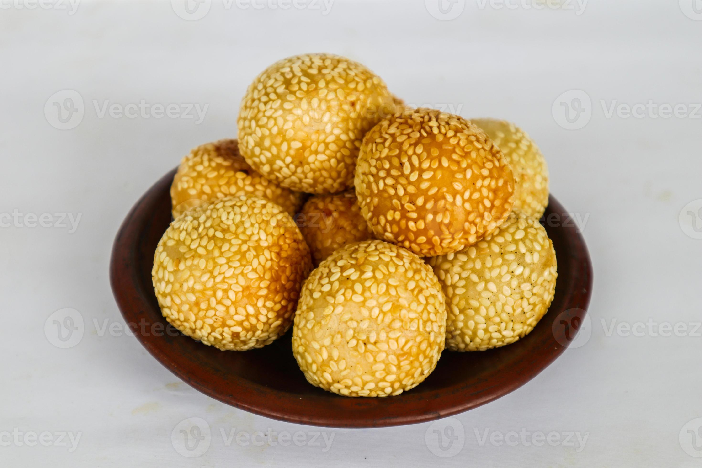

菜单 Chino
Menú Tradicional de Tres Tiempos
 前菜 – Entrada
前菜 – Entrada
Jiaozi (饺子)
Dumplings tradicionales rellenos de cerdo y vegetales al vapor.
Sopa Agripicante (酸辣汤)
Caldo con tofu, bambú, setas y un toque de picante y vinagre.
 主菜 – Plato Fuerte
主菜 – Plato Fuerte
Pollo Kung Pao (宫保鸡丁)
Salteado de pollo con cacahuates, chiles secos y salsa dulce-picante.
Chow Mein (炒面)
Fideos salteados con verduras frescas y salsa de soya.
Cerdo Agridulce (糖醋里脊)
Clásico cerdo crujiente con salsa agridulce de piña y pimiento.

甜点 – Postre
Pastel de Luna (月饼)
Relleno de pasta dulce y decorado con patrones tradicionales.
Bolas de Sésamo (芝麻球)
Dulces fritos rellenos de frijol rojo cubiertos con ajonjolí.